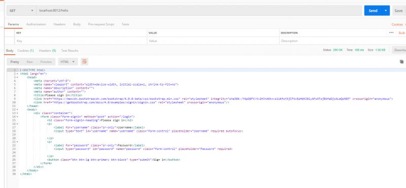
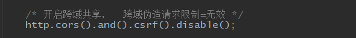

原文连接:https://www.cnblogs.com/guos/p/11617243.html
前后端分离
前面讨论了springboot下security很多常用的功能，其它的功能建议参考官方文档学习。网页版登录的形式现在已经不是最流行的了，最流行的是前后端分离的登录方式，前端单独成为一个项目，与后台的交互，包括登录认证和授权都是由异步接口来实现。在前后端不分离的应用模式中，前端页面看到的效果都是由后端控制，由后端渲染页面或重定向，也就是后端需要控制前端的展示，前端与后端的耦合度很高。这种应用模式比较适合纯网页应用，
但是当后端对接App时，App可能并不需要后端返回一个HTML网页，而仅仅是数据本身，所以后端原本返回网页的接口不再适用于前端App应用，为了对接App后端还需再开发一套接口。
在前后端分离的应用模式中，后端仅返回前端所需的数据，不再渲染HTML页面，不再控制前端的效果。至于前端用户看到什么效果，从后端请求的数据如何加载到前端中，都由前端自己决定，网页有网页的处理方式，App有App的处理方式，但无论哪种前端，所需的数据基本相同，后端仅需开发一套逻辑对外提供数据即可。在前后端分离的应用模式中 ，前端与后端的耦合度相对较低。

在前后端分离的应用模式中，我们通常将后端开发的每个视图都称为一个接口，或者API，前端通过访问接口来对数据进行增删改查。
前后端分离出现的跨域问题
前后端分离后，出现的经典问题就是跨域问题。跨域，指的是浏览器不能执行其他网站的脚本。它是由浏览器的同源（域名，协议，端口）策略造成的，是浏览器对JavaScript施加的安全限制。具体的跨域理论跨域自行查询学习。在security中，解决跨域问题是非常简单的。只需要增加几行配置即可。
简单示例
来写一个简单的例子来实现前后端分离的异步登录。首先引入依赖：
修改springboot默认配置文件，添加默认用户：
启动类不用修改，添加一个接口：
下面来配置security配置类，首先配置登录，异步登录不再需要后台配置登录页面地址，只需要配置登录参数和api地址即可：
然后加上授权配置和登录成功的处理：
最后加上csrf配置：
最简单的配置已经完成了，最后来看一下登录成功的处理：
返回了一个json形式的登录成功消息。
简单测试
来进行一个简单的测试，启动项目，使用postman直接访问hello接口：

访问不成功，返回了登录的html页面，关于没有权限的处理，后面会做的更加友好。下面用接口进行登录：
可以看到正常登录成功，postman中也多了一个cookie信息：
这和浏览器的cookie是一样的，删掉以后就成了未登录状态。现在访问hello接口，可以看到正常的效果：
添加跨域
添加跨域配置非常简单，首先在security配置中调用cors方法：

然后我们打开springboot的官方文档，查看跨域配置：
可以看到，在springboot中，全局的跨域配置非常简单，我们来模仿写一个bean：
这样跨域就配置好了。
其它处理器
来看一下登录失败（比如账号错误）时的处理器：
配置登录失败处理器：
测试：
来看一下登录超时或者未登录的异常处理器：
配置登录超时或者未登录处理器：
测试，在未登录的情况下，直接访问hello接口：
现在提示友好了很多。最后看一下权限不足处理器：
配置权限不足处理器：
然后开启方法级别的权限注解，在hello方法上面配置HELLO权限：
在配置文件中，给默认用户admin配置一个其他角色：
然后重启项目，首先在postman中，进行登录，然后再访问hello接口：
此时就会根据处理器的结果提示权限不足。
说明
上面是一个简单的前后端分离的登录的例子。这里只应用了几个简单的功能，不过前面讨论过的从数据库中查询用户，动态权限，共享session，记住我等等的功能，也都可以加入到前后端分离的登录功能中，这些内容的使用和前面网页版的登录没有什么区别。使用这些完全可以满足前后端分离的登录和授权功能。